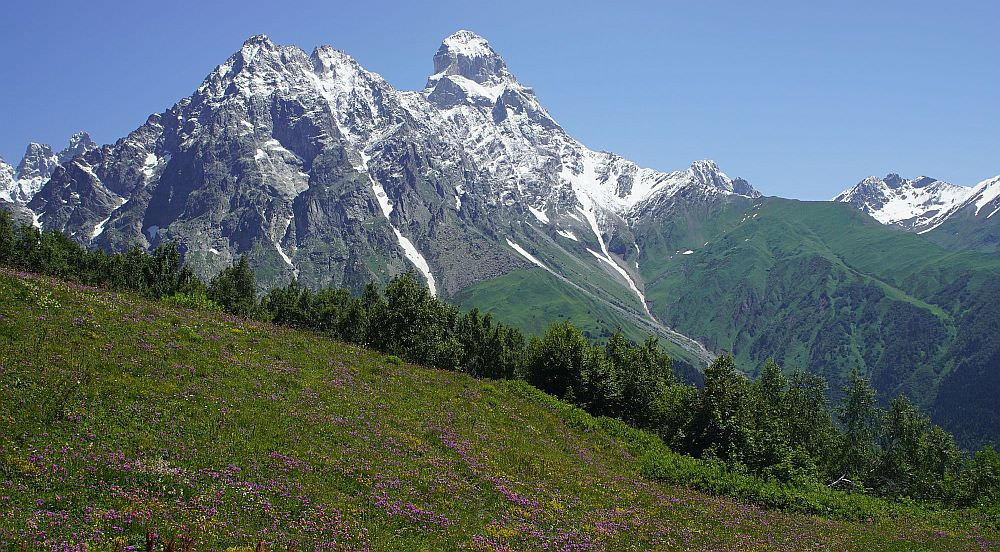
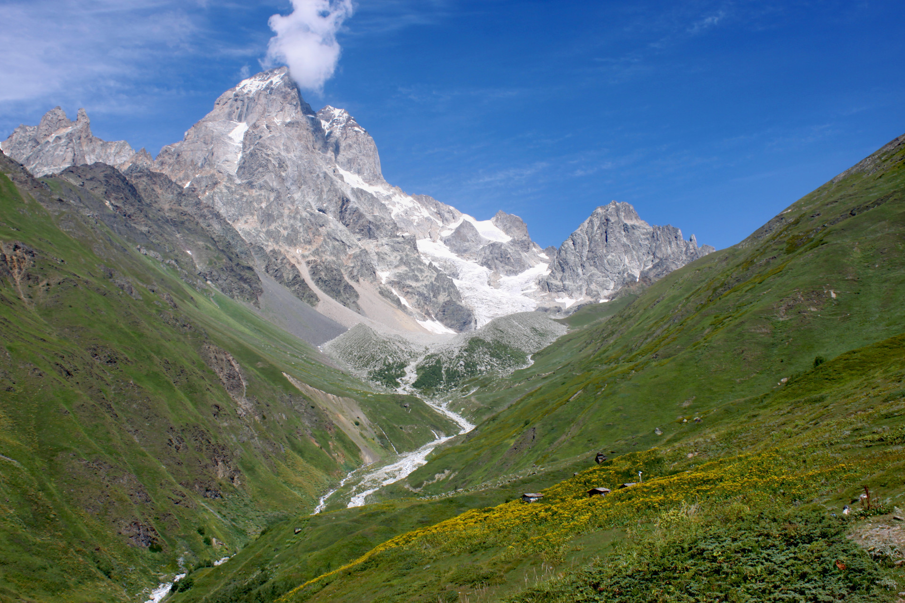
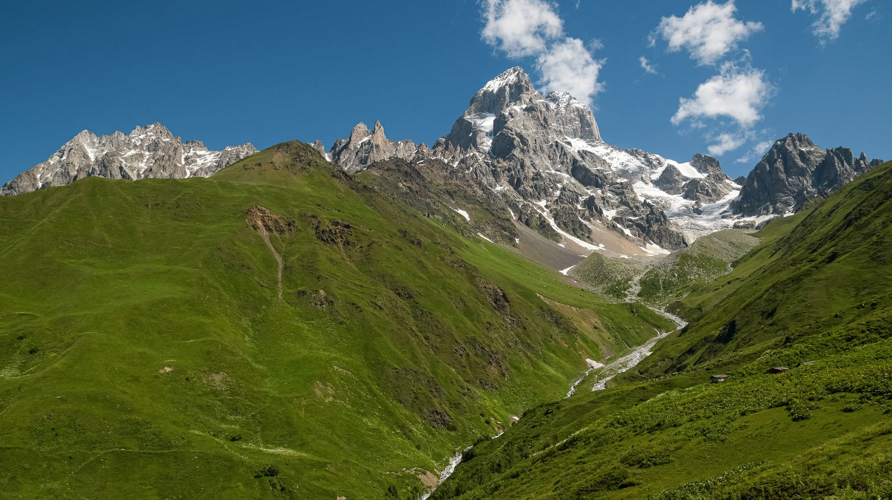
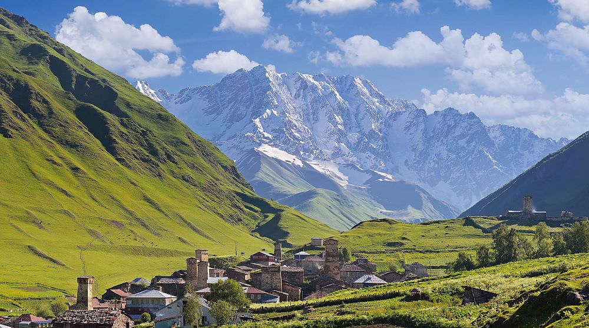

TCT Upper Svaneti · Georgia




Watch: Lobiani & spinach breads may contain egg. Khachapuri has cheese. Carry trail snacks — options thin out west of Mestia. Contact each guesthouse before arrival with dietary needs.
1 GEL ≈ £0.27. Verify before travel.